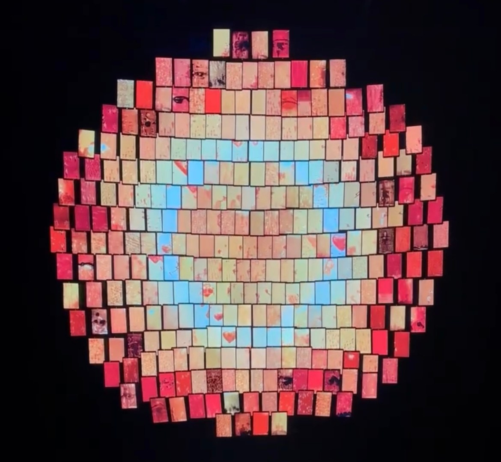
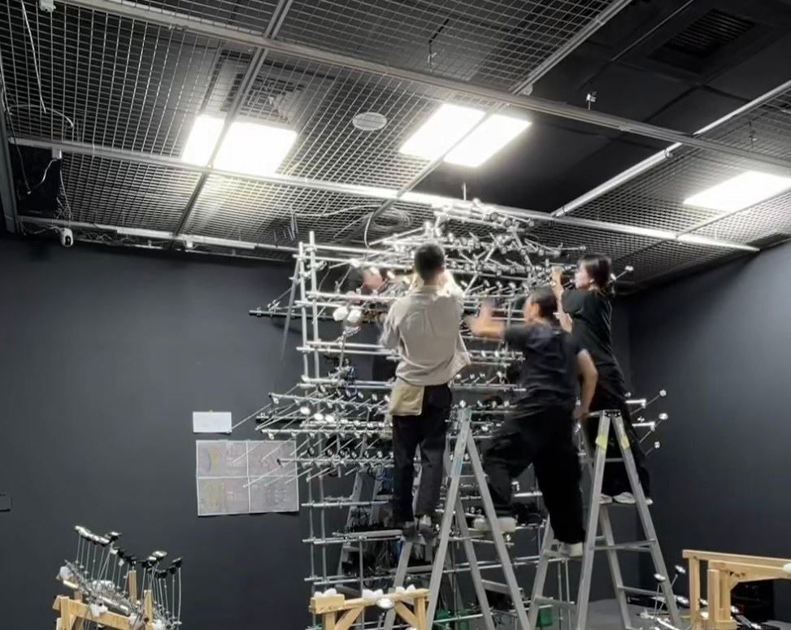
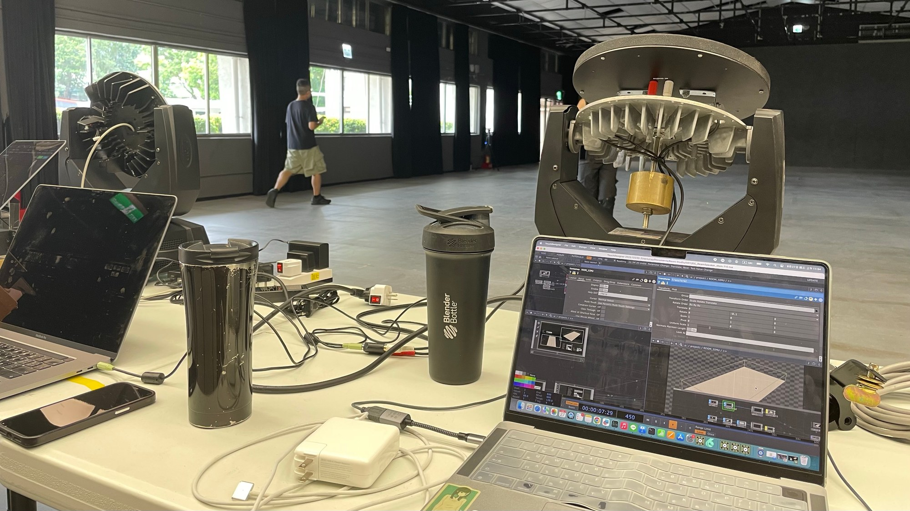
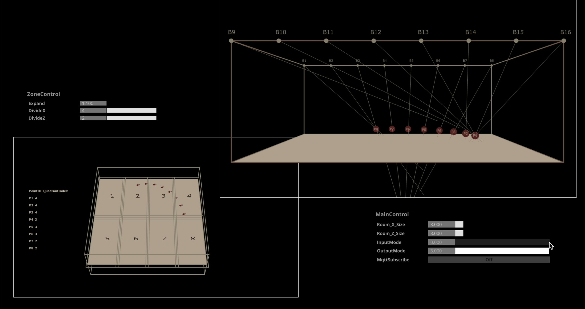
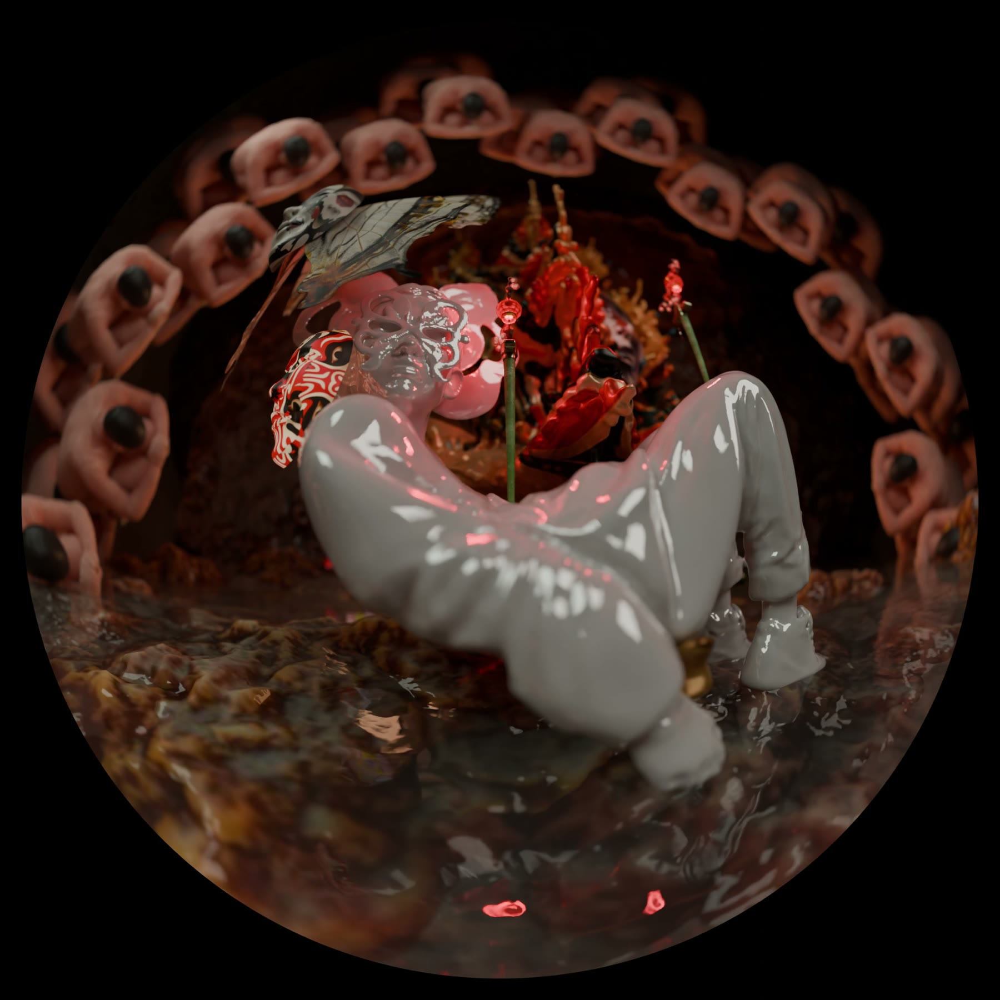

Production work — 2025
協作專案Production work
參與其他創作者作品的部分製作。Contributions to productions by other artists.
宇宙寫生Cosmic Sketches
參與內容：《日光域》影像內容生成與現場布展。Contribution: Generated image content for Solar, and installation on site.


回聲室Echo Chamber
參與內容：參與指向性喇叭追蹤系統（TouchDesigner）的部分開發與測試。Contribution: Took part in developing and testing the tracking system for the directional speakers, built in TouchDesigner.


穹頂計畫視覺示意Dome project visuals
參與內容：團隊穹頂提案的概念影片，由本人獨力完成：Blender 場景建模、材質與鏡頭動畫（8 秒，1920 × 1920 魚眼）。Contribution: Concept film for the group's dome proposal, made entirely by the author in Blender: scene modelling, materials and camera animation (8 s, 1920 × 1920 fisheye).
